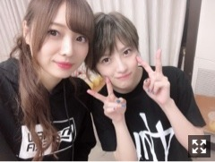
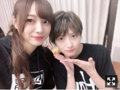
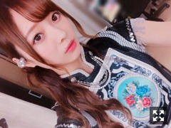
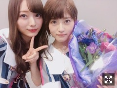

だいすき
みなさまこんにちは！！
乃木坂46の
梅澤美波です！！

何度助けて頂いたことか。
言葉を交わさずとも
気持ちを察してそばにいてくれる
本当に暖かい方でした。
卒業セレモニーも
リハの時から寂しくて寂しくて
早すぎる段階で涙がこぼれそうになり
でも笑顔で見送ろうって思って
楽しんで最後一緒のステージに立とうと決めました！
最後の失恋お掃除人、
最高に楽しめました！

でも、終盤にあった
若月さんがファンの方に向けて書いた
手紙を読んでるのをモニターで見ている時
涙が止まらなくなって
ああ、本当にいなくなってしまうんだなって
そこで実感が湧きまして。
本当に助けられたし
尊敬できる部分しかなくて
暖かくて自分よりも人のことを考える方で
お花のサプライズがあった時なんて
もう苦しくて苦しくて仕方がなくて
若月さんはどこまで素敵な人なんだって
改めて思ったし
でも若月さんは最後まで笑顔で。
この笑顔が大好きだから、
これからずっと応援し続けようって思ったし
私も頑張らなきゃって思いました。
若月さんがおっしゃってた
誰かに影響を与える人になりたいって夢、
わたしがその一人でした。
初めて観に行った舞台は
若月さんの舞台で
そこからどっぷりハマって
自分も何度かやらせて頂くようになって
もっともっと好きになって
ここまでのめり込むようになった
きっかけも若月さんで、
お芝居をする若月さんが大好きでした。
Mステに出させて頂いた時に頂いた言葉も
初めて選抜に選んで頂いた時に
かけてくれた言葉も
全部全部わたしの原動力であり宝物です。
若月さんが最後にくれた言葉、
"華"になれるように
精一杯頑張ります。
わたしもあとどのくらい
ここにいるか分からないけど
最後に幸せだったって言えるくらい
精一杯頑張りたいです
今が本当に貴重で同じ場面なんて二度となくて
だから、
今まで関わってくださった方
これから関わる全ての人と
毎日大切に過ごしたいなって思います！

実はね
すごく分かりにくかったとおもうんですが
失恋お掃除人のMV撮影の時、
ダンスシーンの髪型が横結びだったから
それに近い髪型にしたんです

ずっとずっと大好き！！
先日、川後さんが卒業発表されました。
どんどん卒業される先輩方が多くなって、
見送るのってとても苦しくて
すごくすごく寂しいけど、、
先輩方の乃木坂46としての最後の姿は
いつもいつもキラキラ輝いています
だから、私も頑張らなきゃって
すごく強く思う瞬間でもあります。
残りの時間少しでも思い出作りが出来たらいいなあ。
宝物です
また更新します！
Original：https://www.nogizaka46.com/s/n46/diary/detail/48182?ima=4947&cd=MEMBER